WORKS
触ったときに何が起きるかまで、
作ってあります。
作ってあります。
お店のホームページは、きれいに並んだ写真と文字だけでは足りません。押した指に何が返ってくるか、スマホで片手のまま最後まで読めるか。そこまで作らないと、見た人は次の行動に移らないからです。ここに並ぶのは、その練習をかねて自分で題材を決めて作った見本と、実際にいただいた仕事です。
15件のうち、実際のご依頼は STUDIO FREE 様（北島町のボディケアサロン）の縦型広告動画の1件です。ほかの14件は、架空のお店や施設を想定して作った見本です。受注実績ではありません。
PICK UP
まず、この3つを見てください。
同じ
-

-
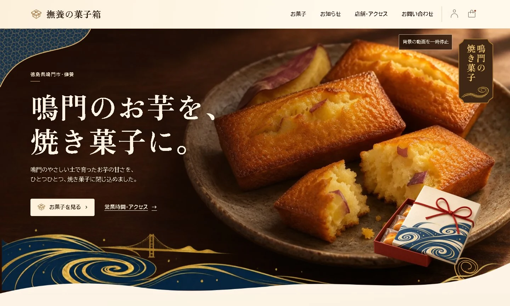
見本・架空の店撫養の
菓子箱 鳴門金時を、焼き菓子にする店。
鳴門・撫養の焼き菓子店という設定で作りました。お菓子1つにつき1ページあり、フィナンシェなら焼き目とほくほくの話だけを書いています。お知らせ、ギフトの包み、営業時間まで含めて19ページ。小さな店でも更新が続けられる形を試した一本です。
-
 見本・架空の会社
見本・架空の会社青葉運輸
荷主と、働きたい人。入口を2つに分ける。
運送会社のサイトには、荷物を預けたい会社と、ここで働きたい人が同時に来ます。この2つは読みたいものが違うので、入口から別々の道を用意しました。会社案内・事業紹介・採用・問い合わせの6ページ構成で、BtoBの仕事の見せ方を試しています。
ALL WORKS
これまでに作ったもの、全部。
近い
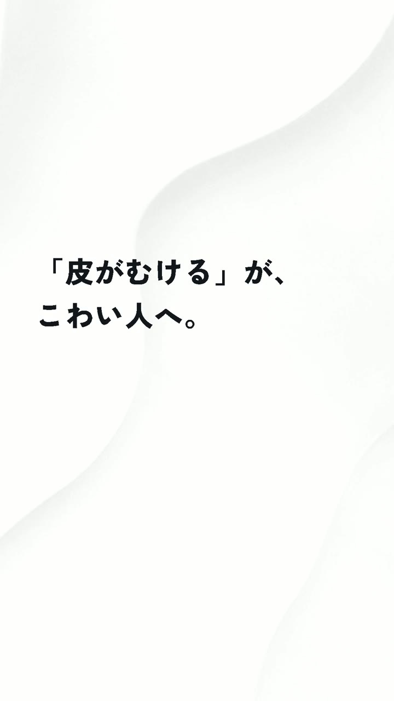
STUDIO FREE 様
北島町のボディケアサロン様。22秒の縦型広告です。効果を約束しない言い回しのまま、正規取扱店だと伝えました。
この仕事の詳細
AIMA — 藍間
藍染の工房。画面の布に触れると、触れた所から藍がにじみます。
触れて、染めてみる撫養の菓子箱
鳴門金時の焼き菓子店。お菓子1つに1ページ、全19ページの見本です。
お菓子を1つ選ぶ
青葉運輸
運送会社。荷物を預けたい会社と、働きたい人で入口を分けました。
6ページを歩く
おきのはま製パン
窯の取っ手を引くと扉が開き、焼きたてが現れます。時刻からパンを選べます。
窯の扉を開ける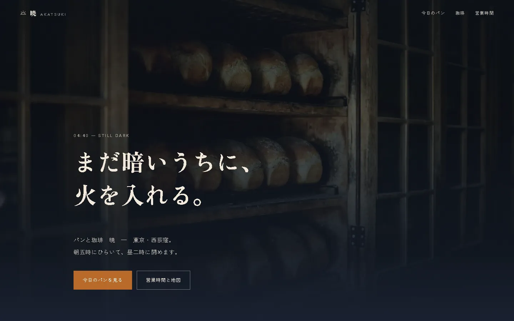
パンと珈琲 暁
朝五時から昼二時までの店。焼き上がる順に並ぶ、時間割のような構成にしました。
夜明けから見る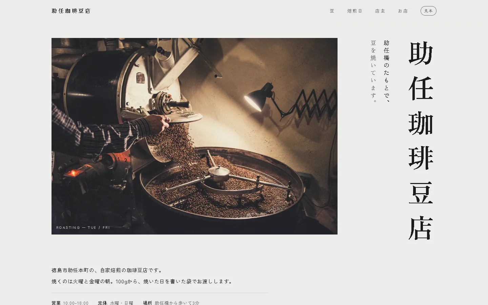
助任珈琲豆店
自家焙煎の豆店。焼いた日を袋に書いて渡す店なので、明朝の縦書きで組みました。
豆を見にいく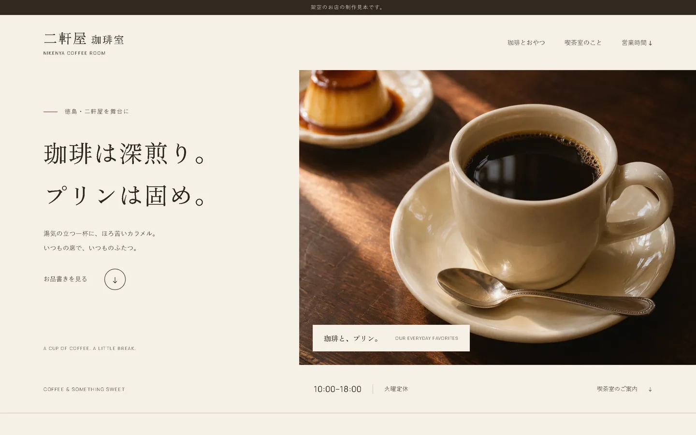
二軒屋珈琲室
珈琲は深煎り、プリンは固め。言い切る見出しだけで、何の店かが届きます。
一杯とひと皿を見る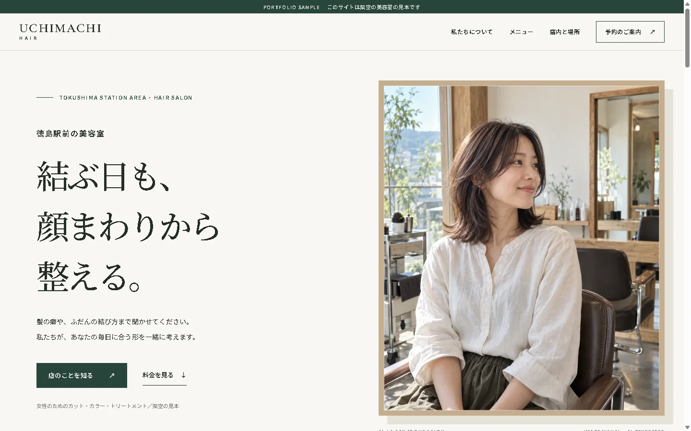
UCHIMACHI HAIR
徳島駅前の美容室。予約の流れを、最後まで押して試せるようにしてあります。
予約を試してみる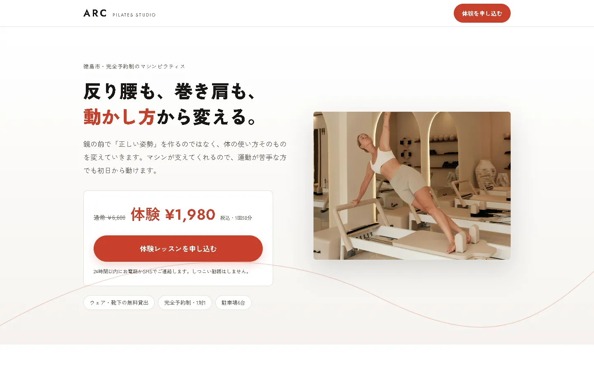
pilates studio ARC
体験レッスンの申し込みだけを目的にした1枚。迷う所を全部削りました。
申し込みまで進む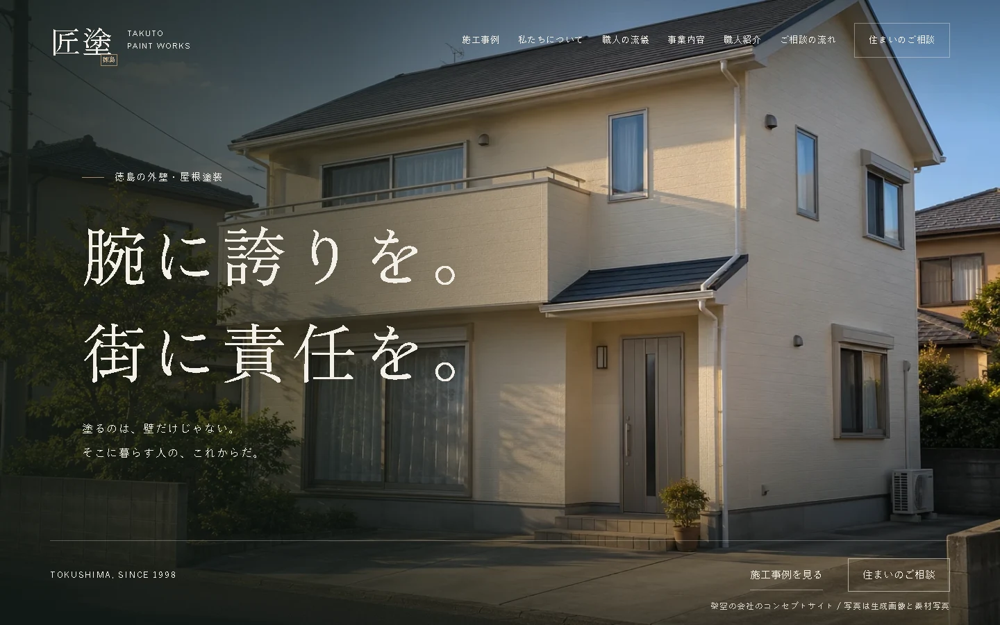
匠塗 — TAKUTO PAINT WORKS
徳島の塗装会社。職人の仕事を、腕と街への責任という言葉で立てています。
現場を見る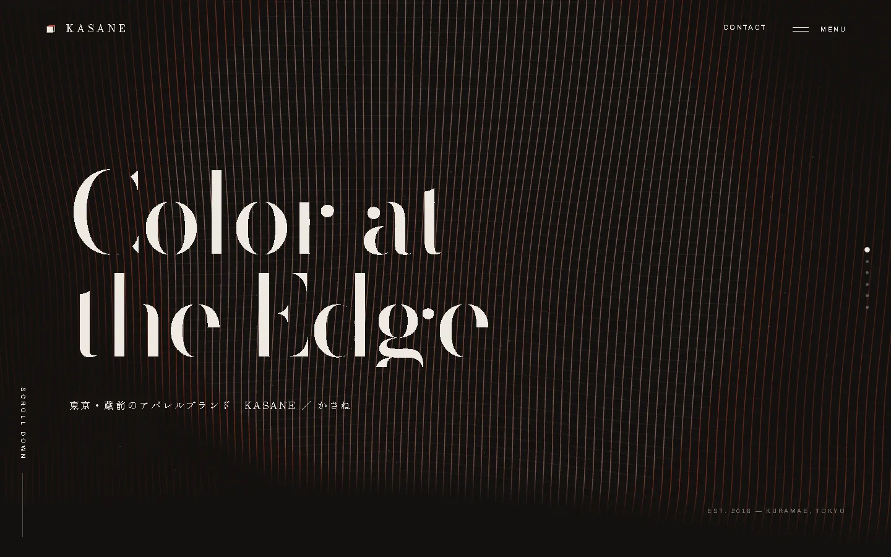
KASANE — かさね
東京・蔵前のアパレル。色は襟裏と裾だけ、という服の作りを画面にも移しました。
端の色を探す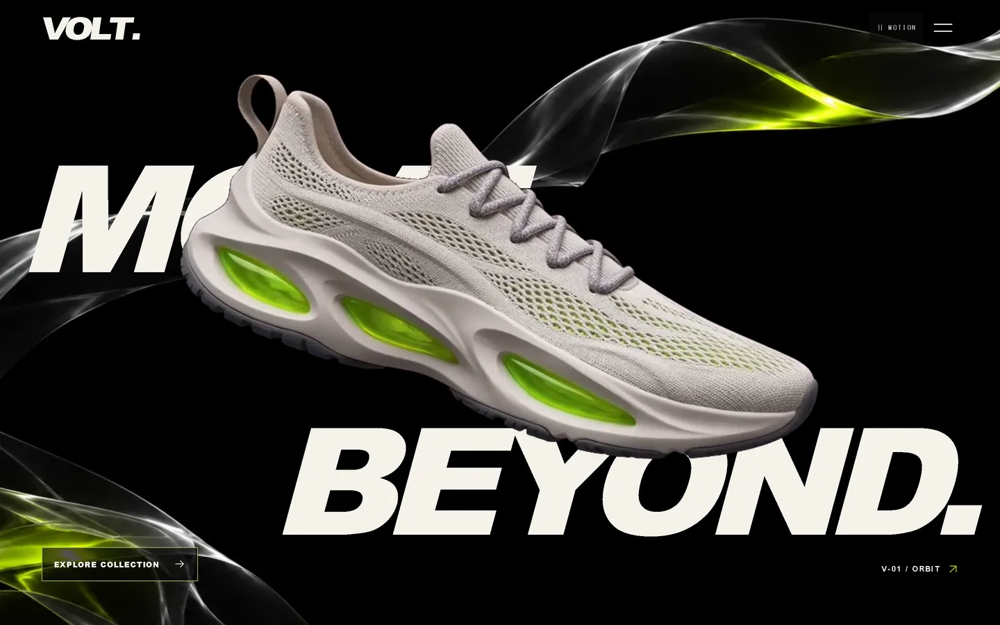
VOLT.
走るためのシューズ。黒と蛍光の2色だけで、速さの気配を作っています。
走り出す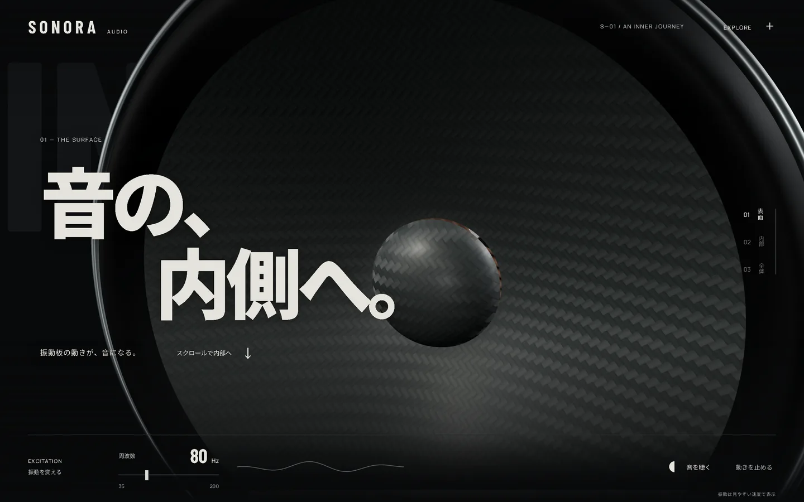
SONORA AUDIO
スピーカーの中へ進んでいく立体。写真素材はひとつも使わず、数式だけで描きました。
内側へ進む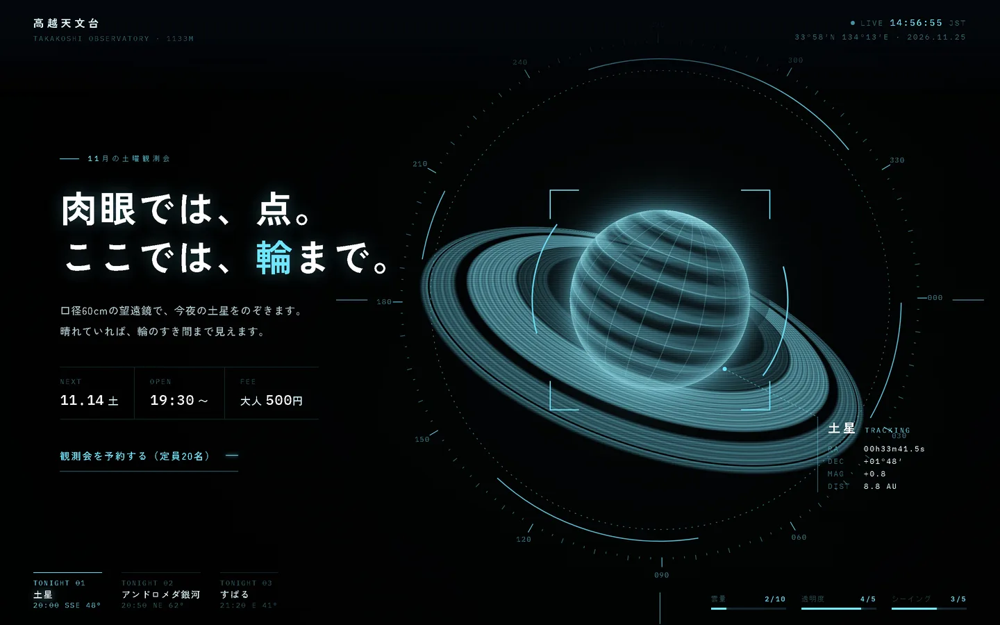
高越天文台
肉眼では点の土星が、望遠鏡では輪まで見える。その差を入口の1画面にしました。
観測会をのぞくこの業種の作品はまだありません。
このほかにも作りかけの見本がいくつかあります。仕上がったものから、ここに並べていきます。
気になった1つに近いお店なら、同じ作り方ができます。
「これのうちの店版」で構いません。写真を1枚送っていただければ、作れる物と金額を文字でお返しします。